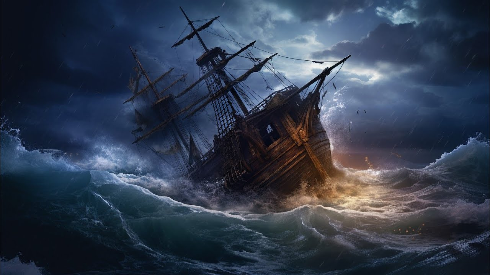

The Mysterious Ship
In the Spring of 1847, the little village of Ruralville was thrown into a state of excitement by the landing of a strange Brig in the harbour. It carried no flag, and no name was painted on its side, and everything about it was such as would excite suspicion. It was from Tripoli, Africa, and the captain was named Manuel Ruello. The Excitement increased, however; when John Griggs, (The magnate of the villiage) suddenly disappeared from his home. This was the night of October 4th—on October 5th the Brig left.
It was 8 bells on the U.S. Frigate “Constitution” when Commander Farragut sighted a strange brig to the westward. It carried no flag, and no name was painted on its side, and everything about it was such as would excite suspicion. On hailing it put up the Pirates Flag. Farragut ordered a gun fired and no sooner did he fire, than the pirate ship gave them a broadside when the Fight was over Commander Farragut Missed one man named Henry F. Johns
It was Summer on the Island of Madagascar. And Natives were picking corn, when one cried “Companions! I sight a ship! with no flag and with no name printed on the side and with everything about it such as would excite Suspicion!” And The Natives fled in all directions when They came together on The other side of The Island one was missing his name was Dahabea.
At length it was Decided Something must be done, Notes were compared. Three abductions were found to have taken place Dissapearance of John Griggs, Henry John, & Dahabea, were recalled. Finally Advertisements were issued offering £5000 reward for the capture of Manuel Ruello, Ship, Prisoners, & crew. When exciting News reached London! An unknown Brig with no name was wrecked of The Florida Keys in America

But The mystery of John Brown lay still unsolved. So They Kept strict watch over the port at no-mans Land, Hoping The Submarine Boat would arrive. At length, however, it did arrive bearing with it John Brown. They Fixed upon the 5th of October For the Attack. They ranged along the shore and Formed Bodies. Finally one by one and Headed by Manuel Ruello The Pirates left the Boat. They were (to their astonishment) Met By a Rapid Fire
The Pirates were at Length defeated and a search was made for Brown. At Length he (the aforesaid Brown) was found. John Gregg was royally received at Ruralville and a dinner was Dahabea was made King of Madagascar, and Manuel Ruello was Executed at Newgate Prison